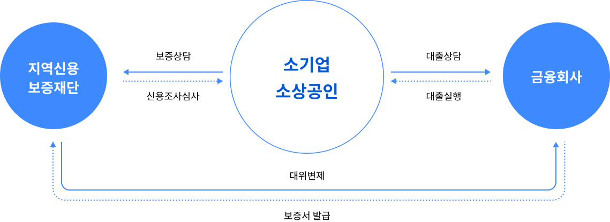

신용보증재단
신용보증재단은 지역신요보증재단법 제1조에 따라 담보력이 부족한 지역내 소기업, 소상공인 등과 개인의 채무를 보증하게 함으로써 자금 융통을 원활하게 하며, 지역 경제 활성화와 서민의 복리 증진에 이바지함을 목적으로 설립된 재단입니다. 주요업무로는 기본 재산의 관리, 신용보증, 신용조사 및 신용정보의 관리, 경영지도, 구상권의 행사 등이 있습니다.
-
보증대상
- 본사나 주사업장이 해당지역 신용보증재단의 관할지역내에 소재하고 사업자등록증을 득한 소기업·소상공인
-
보증금지
- 보증기관이 보증채무를 이행한 후 채권을 회수하지 못한 기업 및 신용보증 사고기업
- 위 기업의 과점주주와 무한책임사원이 영위하는 기업 또는 이들이 대표자로 되어 있는 기업
-
보증제한
- 휴업중인 기업
- 금융기관 대출금을 빈번하게 연체하고 있는 기업
- 사업성이 낮은 기업
- 부실자료 제출 기업
- 금융기관이나 지역신용보증재단에 손실을 입힌 기업
- 보증금지기업의 연대보증인인 기업 또는 연대보증인이 대표자로 되어 있는 법인기업
- 보증제한업종을 영위하는 기업(도박장, 주점업 등 유흥·사치업)
- 기타 신용상태가 불량하다고 판단되는 기업
-
신용보증제도
- 물적 담보력은 미약하나 사업성, 성장잠재력, 신용상태가 양호한 지역 소기업·소상공인등에 대한 채무보증을 통해 기업들이 금융기관으로부터 원활하게
자금을 조달할 수 있도록 함으로써 경영안정을 도모하여 지역경제 활성화에 기여하는 제도
- 물적 담보력은 미약하나 사업성, 성장잠재력, 신용상태가 양호한 지역 소기업·소상공인등에 대한 채무보증을 통해 기업들이 금융기관으로부터 원활하게
-
지역신용보증재단
- 중앙정부와 해당 시, 도가 재원을 마련하여 지역신용보증재단법에 의해 설립한 비영리 특별법인으로 현재 관역자치단체별로 16개 신용보증재단을 설치, 운영
